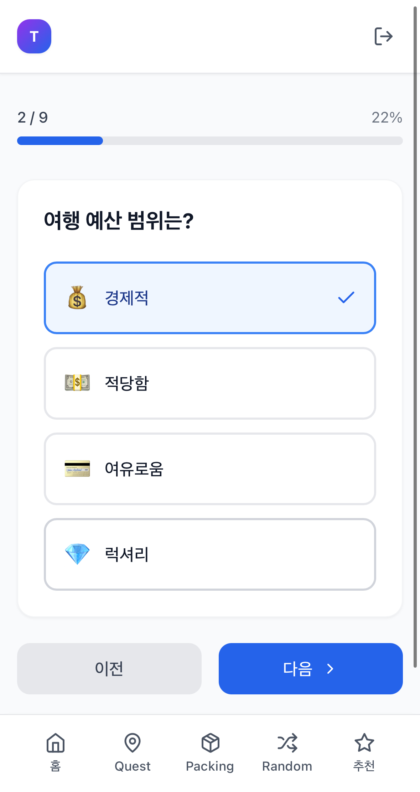
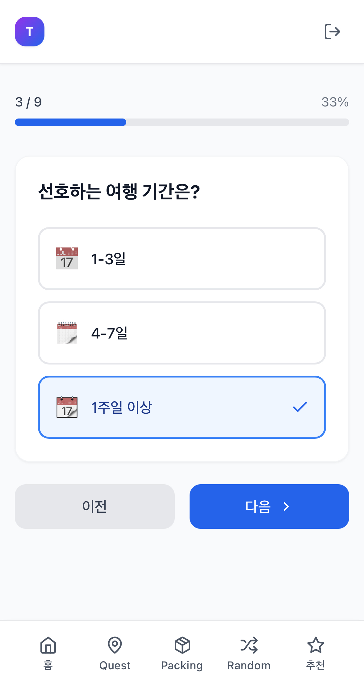
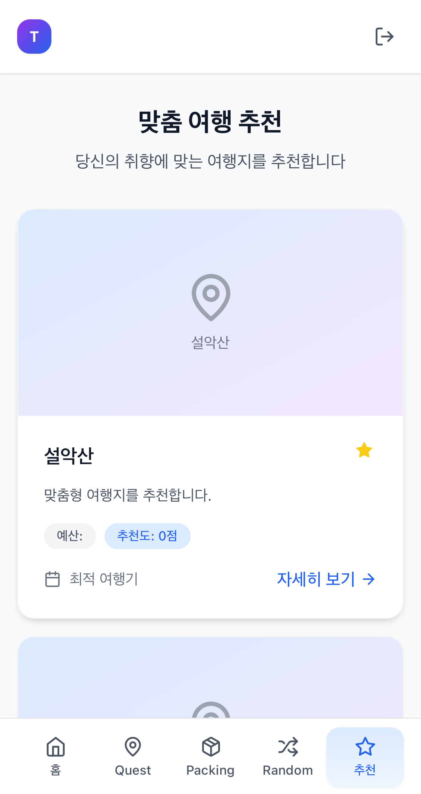
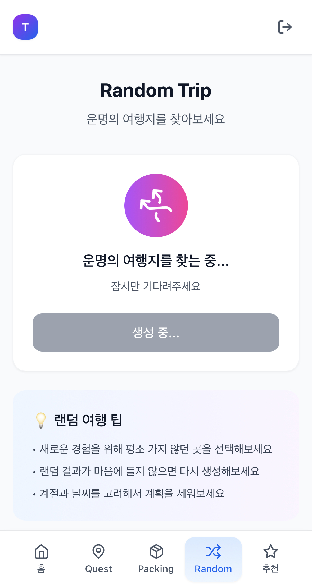

1. 프로젝트 개요
- 프로젝트명: Triply - 사용자 취향 기반 개인화 여행지 추천
- 개발 기간: 2025 – 진행 중
- 참여 인원: 1명
- 나의 역할: 시스템 아키텍처 설계, 백엔드(API/DB/인증), 웹 프론트엔드(UI/UX), 추천 알고리즘 및 데이터 모델 설계, 성능 최적화
2. 기술 스택
- 사용 언어: JavaScript (TypeScript 도입 예정)
- 프레임워크/라이브러리: React.js, React Router, Tailwind CSS, Axios, Node.js, Express.js
- 데이터베이스: MongoDB (Mongoose)
- 인증/실시간: JWT, Socket.io(계획)
- 개발 도구: Visual Studio Code, Postman, npm
3. 주요 기능
- 핵심 기능 소개: 여행 취향 설문 응답과 사용자 행동을 반영한 하이브리드 추천(콘텐츠 기반 + 협업 필터링)
- 기술적 차별점: 9개 요소 가중치 기반 점수화, 지역 다양성 보장, 최소 점수 임계값 필터, MongoDB 인덱싱 및 lean() 활용
- 성능 최적화 내용: 컬렉션 인덱스 설계(지역/컨셉/스타일/활성화 상태), 쿼리 최적화 및 lean(), 캐싱 도입 예정
4. 문제 해결 사례
- 인증 이슈: 로그인/토큰 만료 처리 혼선 → 인증 미들웨어 정비, 401 처리 표준화 및 클라이언트 리다이렉트
- 설문-추천 연동: 설문 미완료 사용자의 404 흐름 불명확 → 서버에서 needsSurvey 명시, 클라이언트 가드 및 UX 메시지 개선
- 데이터 시딩/스키마: 여행지 초기 데이터 정합성 문제 → 스키마(인덱스/열거형) 정비 및 시드 유틸 개선
📱 주요 기능 목록
- 설문 기반 개인화 추천 페이지
- 여행 퀘스트(Quest Trip) · 랜덤 여행(Random Trip)
- 출발일 기반 패킹 체크리스트(Travel Packing)
- 관리자 페이지를 통한 여행지 등록/관리
🧠 알고리즘 하이라이트
- 콘텐츠 기반 필터링: 스타일(5), 컨셉(8), 예산(3), 기간(2), 계절(3), 숙소(2), 교통(1), 활동(활동당 2), 동반자(3) 가중치 점수화
- 협업 필터링: 유사 선호(스타일/예산) 사용자 그룹의 인기 여행지 보강
- 품질/다양성 제어: 최소 점수 임계값 적용, 지역 다양성 보장 로직, 중복 제거 및 상한(limit) 적용
📸 화면 캡처 및 스케치




.png)
.png)
🔍 배운 점
- REST API 설계와 MongoDB(Mongoose) 기반 DB 모델링
- JWT 기반 인증/인가 및 클라이언트 가드 설계
- 개인화 추천 알고리즘 설계와 가중치 튜닝, 데이터 품질 관리